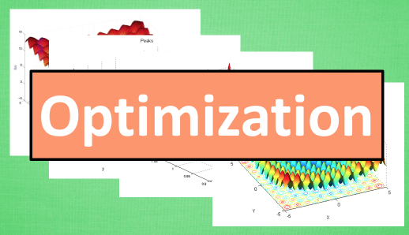
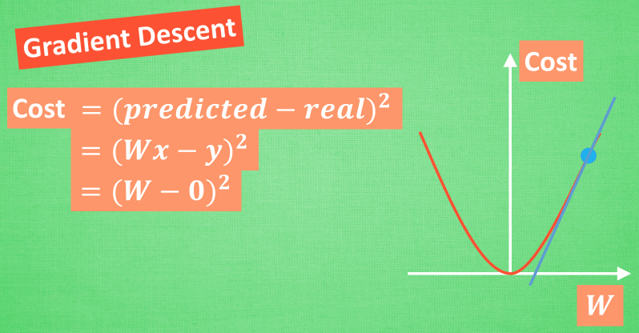
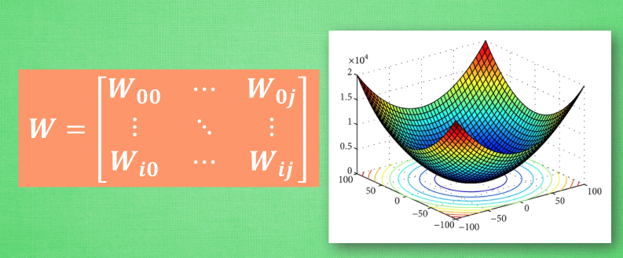
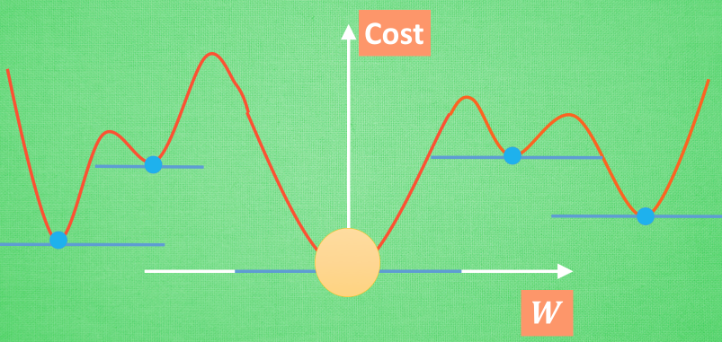

神经网络 梯度下降
作者: 莫烦 编辑: 莫烦
学习资料:
欢迎观看有趣的机器学习系列视频, 神经网络是当今为止最流行的一种深度学习框架, 他的基本原理也很简单, 就是一种梯度下降机制. 我们今天就来看看这神奇的优化模式吧.
Optimization

学习机器学习的同学们常会遇到这样的图像, 我了个天, 看上去好复杂, 哈哈, 不过还挺好看的. 这些和我们说的梯度下降又有什么关系呢? 原来这些图片展示出来了一个家族的历史, 这个家族的名字就是-”optimization” (优化问题). 优化能力是人类历史上的重大突破, 他解决了很多实际生活中的问题. 从而渐渐演化成了一个庞大的家族.
比如说牛顿法 (Newton’s method), 最小二乘法(Least Squares method), 梯度下降法 (Gradient Descent) 等等. 而我们的神经网络就是属于梯度下降法这个分支中的一个. 提到梯度下降, 我们不得不说说大学里面学习过的求导求微分. 因为这就是传说中”梯度下降”里面的”梯度” (gradient)啦. 听到求导微分可别后怕, 因为这个短视频只是让你有一个直观上的理解, 并不会涉及太过复杂的东西.
梯度下降

初学神经网络的时候, 我们通常会遇到这样一个方程, 叫做误差方程 (Cost Function). 用来计算预测出来的和我们实际中的值有多大差别. 在预测数值的问题中, 我们常用平方差 (Mean Squared Error) 来代替. 我们简化一下这个方程, W是我们神经网络中的参数, x, y 都是我们的数据, 因为 xy 都是实实在在的数据点, 在这个假设情况中, 是多少都无所谓, 然后我们再厚颜无耻地像这样继续简化一下, (注意, 这个过程在在数学中并不正确, 不过我们只是为了看效果), 所以现在误差值曲线就成了这样. 假设我们初始化的 W 在这个位置. 而这个位置的斜率是这条线, 这也就是梯度下降中的梯度啦. 我们从图中可以看出, Cost 误差最小的时候正是这条 cost 曲线最低的地方, 不过在蓝点的 W 却不知道这件事情, 他目前所知道的就是梯度线为自己在这个位置指出的一个下降方向, 我们就要朝着这个蓝色梯度的方向下降一点点. 在做一条切线, 发现我还能下降, 那我就朝着梯度的方向继续下降, 这时, 再展示出现在的梯度, 因为梯度线已经躺平了, 我们已经指不出哪边是下降的方向了, 所以这时我们就找到了 W 参数的最理想值. 简而言之, 就是找到梯度线躺平的点. 可是神经网络的梯度下降可没这么简单.

神经网络中的 W 可不止一个, 如果只有一个 W, 我们就能画出之前那样的误差曲线, 如果有两个 W 也简单, 我们可以用一个3D 图来展示, 可是超过3个 W, 我们可就没办法很好的可视化出来啦. 这可不是最要命的. 在通常的神经网络中, 误差曲线可没这么优雅.
全局 and 局部最优

在简化版的误差曲线中, 我们只要找到梯度线躺平的地方, 就能能迅速找到误差最小时的 W. 可是很多情况是这样的, 误差曲线并不只有一个沟, 而且梯度躺平的点也不止一个. 不同的 W 初始化的位置, 将会带来不同的下降区域. 不同的下降区域, 又会带来不同的 W 解. 在这个图像当中, W 的全局最优解(Global minima)在这个位置, 而其它的 解都是局部最优(Local minima). 全局最优固然是最好, 但是很多时候, 你手中的都是一个局部最优解, 这也是无可避免的. 不过你可以不必担心, 因为虽然不是全局最优, 但是神经网络也能让你的局部最优足够优秀, 以至于即使拿着一个局部最优也能出色的完成手中的任务.
如果你觉得这篇文章或视频对你的学习很有帮助, 请你也分享它, 让它能再次帮助到更多的需要学习的人. 莫烦没有正式的经济来源, 如果你也想支持 莫烦Python 并看到更好的教学内容, 赞助他一点点, 作为鼓励他继续开源的动力.